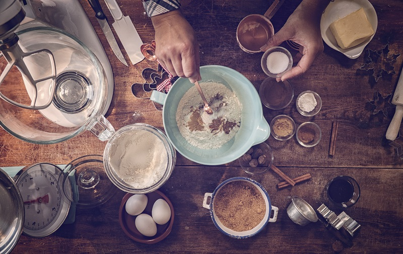

I absolutely love baking and eating sweet treats and desserts. These are three of my most recommended and desserts and also the ones I love the most. There is everything from crisp meringue crowns to gooey seven layer bars.
Not only do I love baking, but it is good such an amazing thing to do! You can learn new recipes, and also tweak them, so you can get your perfect results. You can bond with family members or friends over a fun recipe. You can even listen to music or an audiobook while baking! There is just an endless amount of fun related to baking!
